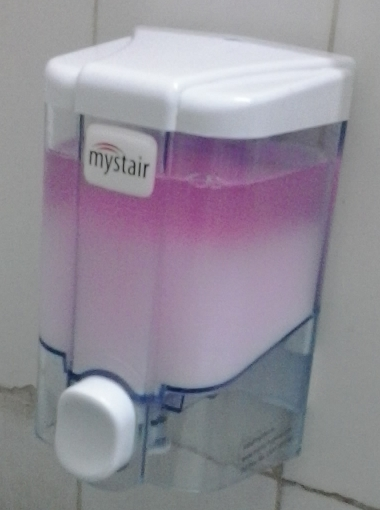
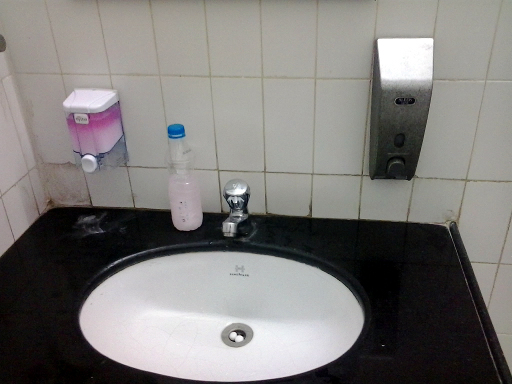

The post-liberal middle-class Indian aping various Western ways of life without any depth of understanding of our surrounding support system leads to an endless stream of stupid behavior here around IIT by people who should know better.
No self- money-respecting Indian architect today can imagine
bathrooms with exposed plumbing. However, unlike developed nations
that have a large underbelly of technical vocational schools and
certified plumbers, Indian construction quality is the pits. Here you
see a urinal that originally had a concealed exit pipe.
The concealed pipe got blocked. In the Indian construction industry, the only labor that is semi-skilled get whisked away to Dubai or by new construction jobs that pay better than the repair industry. In the repair sector, it's nearly impossible to find anyone who can fog a mirror. So you basically cannot find anyone who will debug the blocked concealed plumbing, ripping out and replacing the tiles if needed.
Elsewhere I have commented on Indians inventing the phrase "cutting corners". So what do we do here? Abandon the concealed plumbing and connect an external PVC pipe to the drain. (Actually, in the initial months, until a C3-grade plumber was found, a bucket was placed below the urinal and drained occasionally. Yuck.)
The PVC pipe has displaced the drain cover as you can see. The top opening to the concealed pipe remains open. Smelliness and roaches are the result, forget the looks. This, by the way, in a five-year-old building inside IIT.
So we spend for the concealed plumbing, then we spend for the external plumbing and we spend for the ad-hoc ugliness and lack of function. And still we have morons like Tom "give war a chance" Friedman extolling the efficiency of "flat earth" outsourcing and the economics of efficiency.
Another example. (Why am I obsessed with bathrooms? Because that's where people's culture shows through best.) A soap dispenser is first installed on the wall. Perhaps the cleaning crew has no clew how to refill it, or perhaps it's a rough patron of the john. In any case, the dispenser button has been bashed in sideways, and there is no soap inside. Instead the dispenser cover is jammed into the soap tank. (Now you know better than to shake hands with an IITian!)
The eventual solution? Abandon the soap dispenser and use a coke bottle with a hole punched in the cap and filled with liquid soap! The cleaning crew is comfortable with refilling coke bottles (eventually the cap will be lost but who cares) and the john patron can live with it. I think it's actually a good idea to recycle and reuse all the polymer poison created by Coke.
But once again, we procured and installed and paid for something we had no commitment to maintain and keep functional. We first spent for the dispenser, then many "employees did not wash their hands before returning to work", and then we did a fix that was consistent with our level of culture and civilization. But some dispenser dispenser got rich on the way.
Update (2013): The computer science building was recently fitted out with the kind of soap dispenser shown in this following photo.
Not visible in the photo is a small keyhole on top of the lid that has to be opened with a small plastic key. Within a week of installation, the janitors lost the keys. Unable to recharge the dispenser, they returned to the time-tested technology of coke bottles with a hole punched in the cap.
In this photo you can also see the first generation soap dispenser originally installed when the building was occupied in 2003. So there you have it: three soap dispensers for one handwash. Capitalism is nothing if not about consumer choice! (The soap you see in the newest dispenser ran out in a week and could never be refilled because the keys were missing.)